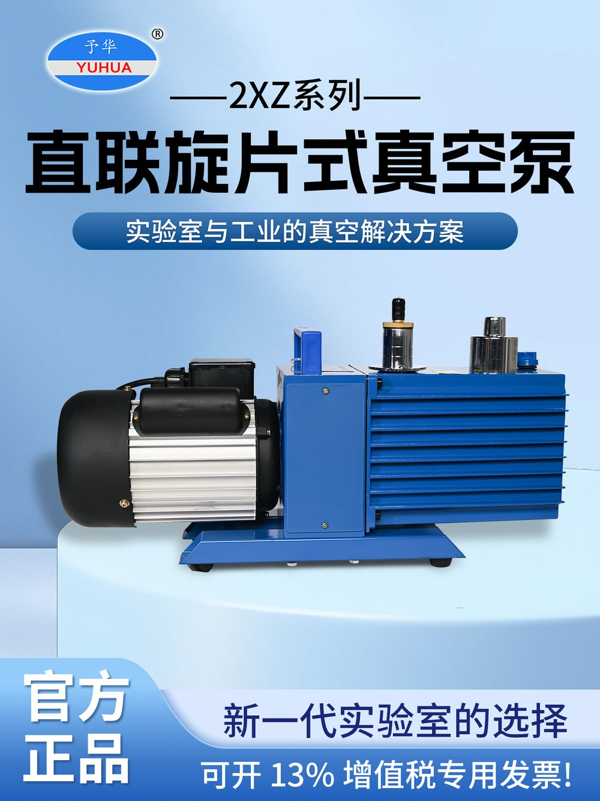

SHZ-95A / SHZ-95B / SHZ-CDCirculating-water Vacuum Pump
Water-jet vacuum system with five suction heads, circulation reservoir and model-dependent corrosion-resistant or stainless housing.
0.098 MPa max vacuum5 suction heads10 L/min50L reservoir220V/50Hz

| Parameter | SHZ-95B | SHZ-95A | SHZ-CD |
|---|
| Power supply | 220V / 50Hz | 220V / 50Hz | 220V / 50Hz |
|---|
| Motor power in archived files | 370W / 550W configuration | 370W / 550W configuration | 370W / 550W configuration |
|---|
| Maximum vacuum | 0.098 MPa | 0.098 MPa | 0.098 MPa |
|---|
| Suction heads | 5 | 5 | 5 |
|---|
| Documented gas flow | 10 L/min | 10 L/min | 10 L/min |
|---|
| Pump head | 12 m | 12 m | 12 m |
|---|
| Reservoir | 50 L | 50 L | 50 L |
|---|
| Machine size | 430 × 520 × 910 mm | 430 × 520 × 910 mm | 430 × 520 × 910 mm |
|---|
| Approx. weight | 30 kg | 30 kg | 30 kg |
|---|
| Housing / material note | Painted steel / reinforced PP + stainless options depending configuration | 304 stainless housing documented | 304 stainless housing documented |
|---|
| Tank | PVC / corrosion-resistant configuration in archived technical file | PVC tank in archived file | PVC tank in archived file |
|---|
| Jet / fittings | Copper jet; PP tees/check valves/suction nozzles in archived configuration | Same documented component concept | Same documented component concept |
|---|
Structure / operating characteristics
Parallel useFive suction heads can be used independently or in parallel
Higher combined flowOptional five-way manifold can combine heads for larger vacuum load
Motor sealingFluororubber seal referenced in archived SHZ-95 technical files
Corrosion optionsAnti-corrosion shell / stainless housing / customized pump-core materials by model
Main applicationsRotary evaporation, reactors, filtration, crystallization, reduced-pressure operations
Working mediumCirculating water; water quality and temperature affect vacuum performance
Configuration note: SHZ-95B appears in standard, anti-corrosion and explosion-proof archive files. Housing, motor and pump-core materials must follow the exact version being ordered.
SHZ-2000Large Multi-head Circulating-water Vacuum Pump
Large-format SHZ configuration with dual pump-core / ten-head arrangement for multiple lines or larger vacuum demand.
Model data
Power supply220V / 50Hz
Motor configuration370W ×2 / 550W ×2 versions in archive
Maximum vacuum0.098 MPa
Suction heads10
Documented flow10 L/min
Pump head12 m
Reservoir60 L
Machine size550 × 450 × 1000 mm
WeightApprox. 60 kg
Housing304 stainless steel
Pump-core conceptDual pump-core / multi-head configuration
YH-500 / YH DIAPHRAGM SERIESOil-free Diaphragm Vacuum Pump
Dry diaphragm option for laboratories requiring no working oil/water medium in the pump mechanism.
YH500 archived technical row
Power supply220V / 50Hz
Input power≤550 W
Rated motor speed≥1390 r/min
Rated volume flow40 L/min
Machine size280 × 190 × 200 mm
Weight12 kg
Working mediumOil-free / no external working medium
CoolingInternal self-cooling airflow design
DiaphragmImported rubber diaphragm described as corrosion-resistant
Continuous operationArchive description states suitability for 24-hour continuous operation
Vacuum-unit warning: one archived YH row contains an ambiguous “700 Kpa” vacuum field that is not internally consistent with normal vacuum notation. The website intentionally does not present that number as an ultimate-vacuum claim. Request the current model datasheet for the confirmed ultimate pressure.
VACUUM TECHNOLOGY OPTIONS
ประเภทปั๊มในคลัง YUHUA
| Type | Example models | Working concept | Strengths | Selection concerns |
|---|
| Circulating-water | SHZ-95B / 95A / CD / 2000 | Water-jet + circulation | Multiple ports, simple operation, good for general laboratory vacuum | Water temperature, water quality, vapor load and corrosion |
| Diaphragm | YH-500 / YH series | Dry diaphragm | No pump oil/water working medium; clean vacuum path | Ultimate pressure and chemical compatibility must match process |
| Rotary-vane | 2XZ-C family | Oil-sealed rotary vane | Deeper vacuum than general water-jet systems | Oil maintenance, solvent vapor, exhaust mist, cold-trap need |
| Corrosion-resistant diaphragm | DP series in archive | Dry diaphragm with PTFE-contact concept | Designed for corrosive vapors in documented product family | Confirm chemical compatibility and exact ultimate pressure |
VACUUM SELECTION
ข้อมูลที่ต้องใช้เลือกปั๊มให้ถูกระบบ
Required pressureUse absolute-pressure target where possible, not only “vacuum degree” wording
Gas/vapor loadSolvent vapor rate and non-condensable gas determine pumping demand
System volumeReactor / evaporator / distillation volume influences pump-down time
Chemical compatibilityAcid, alkali, solvent and condensable vapor compatibility
Condensation controlCold trap / condenser may protect pump and improve vacuum stability
Continuous dutyOperating hours and cooling/maintenance requirements
Noise / cleanlinessImportant for lab environment and sensitive processes
Number of linesSingle machine vs multiple independent suction ports
Exhaust handlingConsider solvent capture, oil mist and ventilation